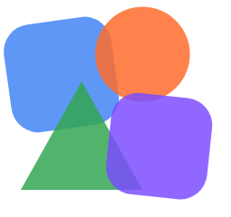

Estante
Conheça quem nós somos, é só escolher um livro.
bem-vindo, tripulante!

Quatro amigos, quatro jeitos diferentes de ser e um time só. Descubra mais sobre o Alymo!
conhecer a gente a nossa logoJuntando tudo o que somos, chegamos ao nosso nome: alymo!
Ela foi desenhada com base na teoria das cores, pra traduzir a personalidade de cada um.
Mostra seu jeito mais introspectivo e organizado, alguém que pensa antes de agir e ajuda a manter tudo no lugar. O azul é pautado pela estabilidade, serenidade e busca pela harmonia.
Traz toda a sua espontaneidade e criatividade, além do otimismo que anima o time. O laranja é movido pela energia, entusiasmo e pela vontade de agir e socializar.
Representa empatia e equilíbrio. Ele acolhe, escuta e ajuda a resolver as coisas com leveza. O verde está ligado ao realismo, ao crescimento e à busca por segurança.
Destaca seu lado individualista e criativo, com sensibilidade aos detalhes e ideias que dão personalidade ao que fazemos. O roxo está associado à intuição e à busca por um propósito maior.
Conheça quem nós somos, é só escolher um livro.
Se interessou e quer conversar com a gente? Chama!